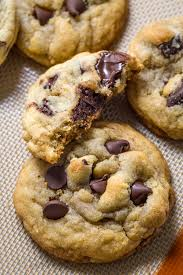

Chocolate Chip Cookies

Nothing beats a classic chocolate chip cookie. These cookies are soft and chewy with
just the right amount of crunch around the edges. They are a perfect afternoon treat with
a cup of tea.
Ingredients
- White Sugar 50g
- Brown Sugar 75g
- Butter 80g
- Flour 140g
- Egg 1
- Baking soda 1 teaspoon
- Chocolate chunks 100g
Instructions
- Whisk together the melted butter and sugars, then whisk in an egg.
- Add in the flour and baking soda, mix well
- Fold in the chocolate chunks, dont overmix.
- Let dough rest in fridge for half an hour
- Preheat oven to 170 degrees celcius
- Divide dough into ten parts and roll into balls
- Place on baking sheet and bake for about 15-18 minutes.